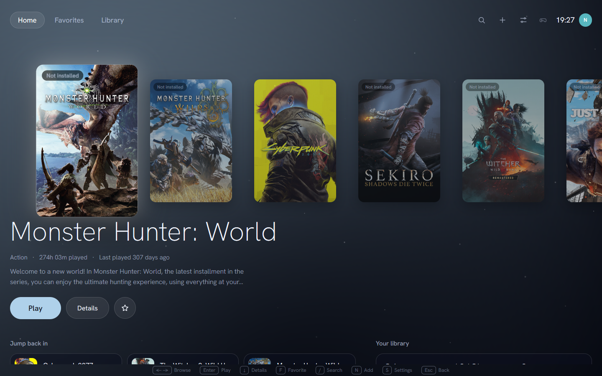
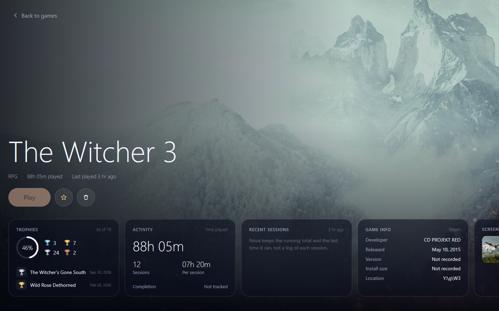
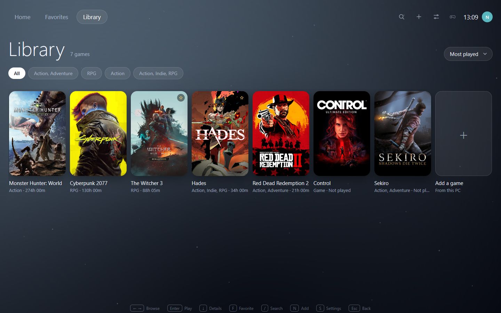
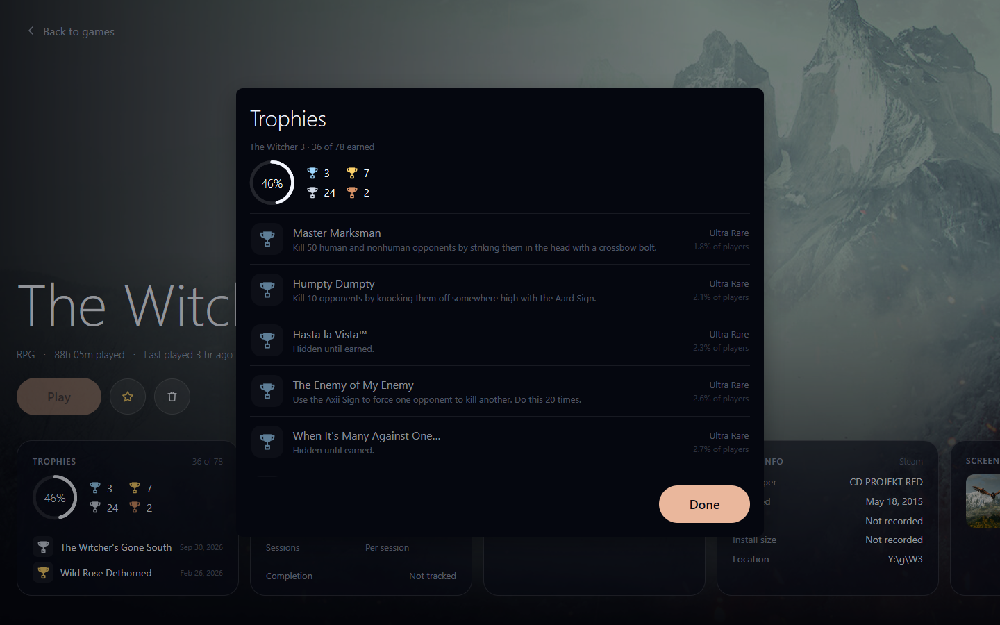

Your games, one console away
Nova lists what is installed and starts the game in Steam artwork.

The game is the interface
Open a game and its own artwork fills the page. Everything the launcher knows about it sits in cards over the art.

A library you can read
Covers only, nothing under the grid. Filter by genre, sort any way, add what the scan missed.
- Reads Steam appmanifests in every library folder
- Manual adds keep a relative path, so folders survive a move
- Tools and redistributables never appear


Trophies, honestly
Achievements come from Steam, and rarity comes from the percentages Steam publishes. Nothing is invented to feel like a console.
- Tiers derived from real global percentages
- Locked rows stay, dimmed, with their rarity
- Play time merges from Steam as max, never summed twice
Keys, not menus
The whole launcher runs from the keyboard. A gamepad works too.
←→ Browse
Enter Play
↓ Details
F Favorite
/ Search
N Add
Esc Back
Get Nova
Windows 10 or newer. Clone it, build it with Go, point it at your games.
View the source on GitHub
Steam manifests
Manual adds
Achievements
Play time
Gamepad
Built on MyGo. Type set in Hanken Grotesk.